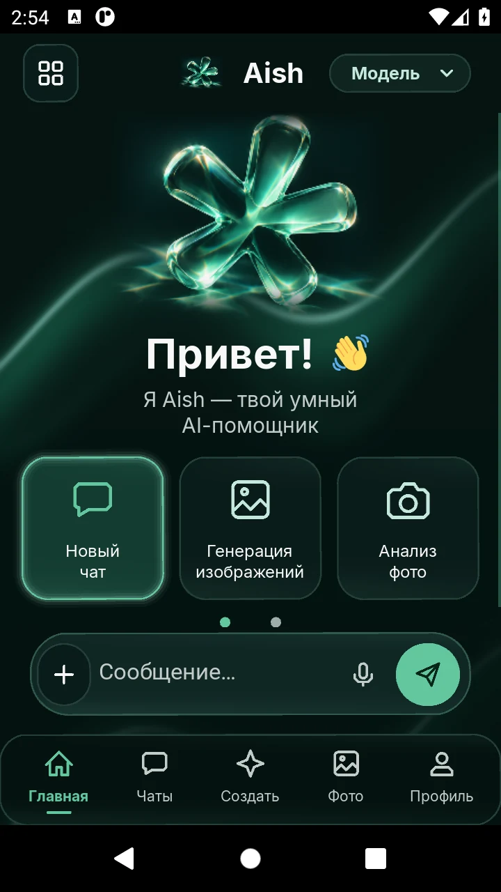
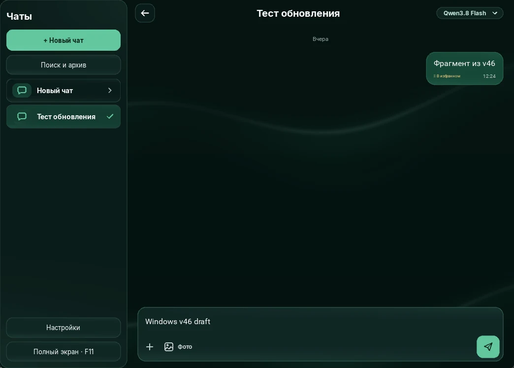

Версия 51 · Android и Windows
Скачать Aish
ИИ-чат в нефритовой теме. Прикрепляй фото и документы, создавай изображения и возвращайся к сохранённым диалогам.
Android
Android 7.0 и новее · ARM64 и ARMv7
Скачать APKWindows
Windows 10 и 11 · x64 · Без установки
Скачать EXEИнтерфейс Aish v52

